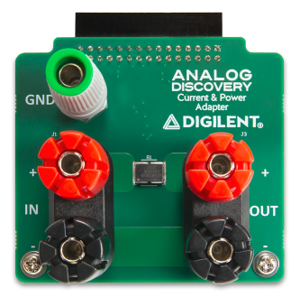
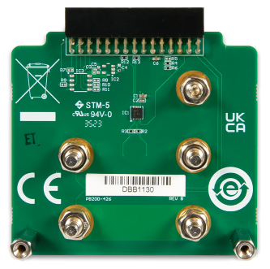

The Current and Power Adapter helps you visualize currents, voltages, and powers in a DC or AC circuit. The Adapter is inserted between the power source and the load and uses Analog Discovery and the WaveForms software to perform calculations on the circuit.

Note: The J2 GND connector connects the Adapter to the reference system ground. This is the GND of the USB interface, which further connects to the GND of the host computer. No voltage applied in the J1 or J3 binding posts can be beyond +/-40V relative to GND.
The Analog Discovery Current and Power Adapter is used to visualize and measure Voltage and Current and compute Power transmission between a source and a load. It uses a 10 mΩ 1% shunt resistor, MAX49925 programmable gain current sense amplifier. It also uses features of the Analog Discovery and WaveForms, as explained below:
The Positive Voltage Supply to provide the 5V supply to the current sense amplifier.
DIO9 (Gain1) and DIO8 (Gain2) to set the gain of the current sense amplifier.
The Oscilloscope differential channels:
Channel 1 to measure the Voltage between the poles of the Output binding post.
Channel 2 to measure the output of the current sense amplifier.
| DIO8 | 0 | 0 | 1 | 1 |
| DIO9 | 0 | 1 | 0 | 1 |
| Gain | 10 | 20 | 50 | 100 |
| Range | -25 A.+25 A | -12.5 A.+12.5 A | -5 A.+5 A | -2.5 A.+2.5 A |
| Resolution | 3.5 mA | 1.75 mA | 0.7 mA | 0.35 mA |
| Bandwidth | 600 kHz | 400 kHz | 200 kHz | 100 kHz |
| Attenuation for V->A | 10.4 X | 5.21 X | 2.01 X | 1.04 X |
For more information, visit the reference page.